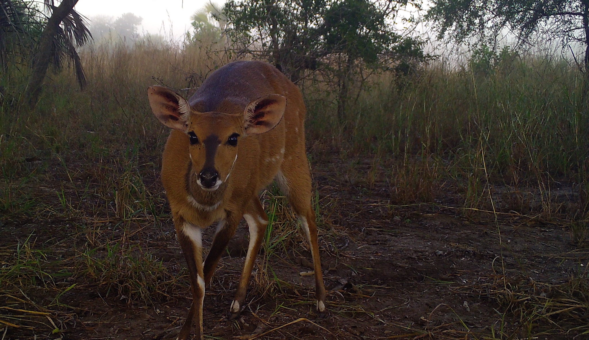

Part 2 Individual expectations

2.1 Individual mentoring plans
Within the first few weeks of joining the Gaynor Lab, you should work with Kaitlyn to develop a plan outlining your short, medium, and long term goals. This is a useful planning document that assists in aligning expectations. Each lab member will revisit the mentoring plan during an individual meeting with Kaitlyn at the beginning of each semester.
A template for these, with thanks to @duffy_ma can be found here.
Kaitlyn - to create new template
In addition to these individualized plans, which will guide specific self-defined expectations, the following guidance clarifies expectations for all lab members in their interactions with Kaitlyn.
2.2 What you can expect of Kaitlyn
- Positive feedback & constructive criticism on work
- Professional career support
- Support for non-technical aspects of making career progress
- Regular meetings (every week) to discuss work & maintain progress on goals
- Provide clear and honest appraisal of your funding situation
2.3 What is expected of you
2.3.1 UBC requirements
Graduate students are responsible for degree progress. This means you need to stay on top of program and university deadlines, requirements, etc. Before registering for each semester, meet with Kaitlyn to discuss plans for the forthcoming semester (classes, activities, etc.).
All lab members are responsible for keeping on top of paperwork related to their own payroll, HR, travel, reimbursements, etc.
2.3.2 Research output
Conferences
We share our research at local, national, and international meetings, and publish our findings in the scientific literature. Kaitlyn strives to provide financial support for grad students and postdocs to attend conferences. You should expect to give a presentation (a poster or a talk) on your work at these.
2.3.3 Funding
All lab members are encouraged to seek and apply for extramural funding to support their work. This includes scholarships and fellowships to pay for salary, but also smaller grants for travel, workshop attendance, or research costs.
As a general rule, all graduate students should apply for at least one grant or fellowship every year.
2.3.4 Community engagement
Celebrate milestones Attend department events Serve community Mentorship of labmates
2.3.5 Work schedule
Work hours
We should all set the working schedule that is the right fit for us, and it is likely that what this ‘fit’ is will change over the course of the time you are in the lab. Depending on the nature of your appointment, there may be specific hours that will need to be worked and you should work with your main collaborator to outline these.
There is value to interacting with others as part of your work, and we do expect you will be available during normal working hours for at least some of the time during the week. Lab members should not expect others to be available during evenings and weekends. We also recognize that there will occasionally be times where there is a need to work more to meet a deadline, but this should be the exception - an expectation of overwork is not to be normalized.
Time budgeting
For graduate students and postdocs, plan to spend 40 hours/week on research, teaching, and professional development activities. The exact breakdown of this time will depend on the nature of your appointment (e.g., TA and RA positions). Some people find that counting all ‘billable hours’ is productive for them as it helps them keep accountable to themselves (Kaitlyn uses Toggl for this purpose). Others do not find this method useful. Regularly assess what works best for you.
2.3.6 For postdoctoral researchers
Postdocs are independent researchers and likely will have significant collaboration with researchers at other institutions as part of their research and position.
In general, postdocs are expected to:
* Be present and involved in lab meetings, workshops, campus seminars, and conferences.
* Provide mentorship, technical support, and assistance to other lab members
* Communicate both successes and sticking points on a regular basis with the PI
* Work independently and collaboratively
* Participate in professional development opportunities
* Lead and assist in designated research projects
* Develop and submit proposals to fund future research
While a postdoctoral position is a scientific research position, it is also a training opportunity and a step to something else. Do not feel bad or awkward about pursuing (and taking) employment opportunities, and also training opportunities that help you move toward that next step. We want you to succeed!
2.3.7 For undergraduate lab members
You may be working most closely with a graduate student or postdoc in the Gaynor Lab, in which case they will be your primary source of contact. You should work with them to establish and define your work schedule, protocols for your work, and to ensure you have the necessary equipment to perform your work tasks.
Always feel like you can reach out to both Kaitlyn as lab PI. We are excited to help you use your position in the lab to further your career goals and want to work with you to help you achieve them.